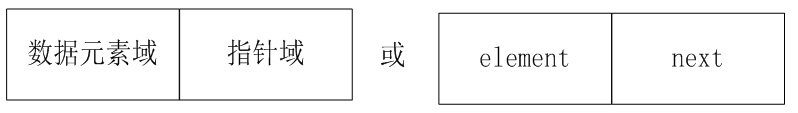

一、链表结构： （物理存储结构上不连续，逻辑上连续；大小不固定）
概念：
链式存储结构是基于指针实现的。我们把一个数据元素和一个指针称为结点。
数据域：存数数据元素信息的域。
指针域：存储直接后继位置的域。
链式存储结构是用指针把相互直接关联的结点（即直接前驱结点或直接后继结点）链接起来。链式存储结构的线性表称为链表。
链表类型：
根据链表的构造方式的不同可以分为：
- 单向链表
- 单向循环链表
- 双向循环链表
二、单链表：
概念：
链表的每个结点中只包含一个指针域，叫做单链表（即构成链表的每个结点只有一个指向直接后继结点的指针）
单链表中每个结点的结构：

1、头指针和头结点：
单链表有带头结点结构和不带头结点结构两种。
“链表中第一个结点的存储位置叫做头指针”，如果链表有头结点，那么头指针就是指向头结点的指针。头指针所指的不存放数据元素的第一个结点称作头结点（头结点指向首元结点）。头结点的数据域一般不放数据（当然有些情况下也可存放链表的长度、用做监视哨等）存放第一个数据元素的结点称作第一个数据元素结点，或称首元结点。
如下图所示：

不带头结点的单链表如下：

带头结点的单链表如下图：

2、不带头结点的单链表的插入操作：

上图中，是不带头结点的单链表的插入操作。如果我们在非第一个结点前进行插入操作，只需要a(i-1)的指针域指向s，然后将s的指针域指向a(i)就行了；如果我们在第一个结点前进行插入操作，头指针head就要等于新插入结点s，这和在非第一个数据元素结点前插入结点时的情况不同。另外，还有一些不同情况需要考虑。
因此，算法对这两种情况就要分别设计实现方法。
3、带头结点的单链表的插入操作：（操作统一，推荐）

上图中，如果采用带头结点的单链表结构，算法实现时，p指向头结点，改变的是p指针的next指针的值（改变头结点的指针域），而头指针head的值不变。
因此，算法实现方法比较简单，其操作与对其它结点的操作统一。
问题1：头结点的好处：
头结点即在链表的首元结点之前附设的一个结点，该结点的数据域中不存储线性表的数据元素，其作用是为了对链表进行操作时，可以对空表、非空表的情况以及对首元结点进行统一处理，编程更方便。
问题2：如何表示空表：
无头结点时，当头指针的值为空时表示空表；
有头结点时，当头结点的指针域为空时表示空表。
如下图所示：


问题3：头结点的数据域内装的是什么？
头结点的数据域可以为空，也可存放线性表长度等附加信息，但此结点不能计入链表长度值。
三、单项链表的代码实现：
1、结点类：
单链表是由一个一个结点组成的，因此，要设计单链表类，必须先设计结点类。结点类的成员变量有两个：一个是数据元素，另一个是表示下一个结点的对象引用（即指针）。
步骤如下：
（1）头结点的构造（设置指针域即可）（2）非头结点的构造（3）获得当前结点的指针域（4）获得当前结点数据域的值（5）设置当前结点的指针域（6）设置当前结点数据域的值
注：类似于get和set方法，成员变量是数据域和指针域。
代码实现：
(1)List.java:（链表本身也是线性表，只不过物理存储上不连续）
package com.yc.list;
/**
* Created by yucheng on 2018/8/22.
* 设计线性表抽象数据类型的Java接口：可以查看JDK源码进行对比
* 1.求元素个数
* 2.插入
* 3.删除
* 4.查找
* 5.判断是否为空
* 注意：此List万不可与java.util.List弄错
* 在导入包的时候要留意
*/
public interface List {
// 获取线性表长度
public int size();
// 判断线性表是否为空
public boolean isEmpty();
// 插入元素
public void insert(int index,Object obj) throws Exception;
// 删除元素
public void delete(int index) throws Exception;
// 获取指定位置的元素
public Object get(int index) throws Exception;
}
(2)Node.java:结点类
package com.yc.singleLinkList.hasNode;
/**
* Created by yucheng on 2018/8/23.
* 此处我们演示的是有头结点的情况：
* 头结点的好处：头结点即在链表的首元结点之前附设的一个结点，该结点的数据域中不存储线性表的数据元素，
* 其作用是为了对链表进行操作时，可以对空表、非空表的情况以及对首元结点进行统一处理，编程更方便。
*/
public class Node {
Object element;// 数据域
Node next;// 指针域
// 因为头结点是不包含数据的，因此它的构造方法与其它的不同
// 头结点构造方法
public Node(Node next){
this.next = next;
}
// 非头结点的结点的构造方法
public Node(Object element,Node next){
this.element = element;
this.next = next;
}
public Object getElement() {
return element;
}
public void setElement(Object element) {
this.element = element;
}
public Node getNext() {
return next;
}
public void setNext(Node next) {
this.next = next;
}
@Override
public String toString() {
return "element=" + element.toString();
}
}
2、单链表类：
单链表类的成员变量至少要有两个：一个是头指针，另一个是单链表中的数据元素个数。但是，如果再增加一个表示单链表当前结点位置的成员变量，则有些成员函数的设计将更加方便。
代码实现：
(3)SingleLinkList.java:单向链表类(核心代码)

package com.yc.singleLinkList.hasNode;
import com.yc.list.List;
/**
* Created by yucheng on 2018/8/23.
* 单链表类:
* 注意：
* 1.因为第一个结点的下标是0，那么自然头结点的下标是-1
* 关键：
* 设置了一个current对象，使得每次操作前，利用index()方法使current对象定位到要操作位置的前一个对象
*/
public class SingleLinkList implements List {
Node head; // 头指针
Node current;// 当前结点对象
int size; // 结点的个数
// 构造器
public SingleLinkList(){
// 初始化头结点,使头指针指向头结点，
// 且刚初始化时只有一个头指针和一个头结点，而且头结点中没有数据
head = current = new Node(null);
// 链表的初始长度为零，头结点不算在链表长度内
size = 0;
}
// 比如我们要在a2这个节点之前进行插入操作，那就先要把当前节点对象定位到a1这个节点，然后修改a1节点的指针域
// 定位函数：即我们要对某个结点进行操作进行，我们需要做两个动作
// 如插入操作：
// 1.找到前一个结点，将其指针指向我们要插入的结点
// 2.将我们要插入的结点的指针指向下一个结点
// 删除操作
// 1.找到前一个结点，将其指针指向下一个结点
public void index(int index) throws Exception{
// 验证输入
if(index < -1 || index > size-1){
throw new Exception("输入错误！");
}
if(index==-1) //说明在头结点之后操作，因为第一个数据元素结点的下标是0，那么头结点的下标自然就是-1了。
return;
current = head.next;// 将当前对象定位到头结点的下一个结点
int j=0;//循环变量
// 实际是将当前对象定位到要操作的对象的前一个对象
while(current != null&&j<index) {
current = current.next;
j++;
}
}
@Override
public void insert(int index, Object obj) throws Exception {
// 输入检查
if (index < 0 || index > size){
throw new Exception("输入错误！");
}
index(index-1);// 定位到要插入的位置的前一个对象
// setNext使current的指针指向new node(),而current.next则使new Node()的指向指向下一个对象
current.setNext(new Node(obj,current.next));
size++;//尺寸加1
}
@Override
public void delete(int index) throws Exception {
if (isEmpty()){
throw new Exception("链表为空!");
}
// 输入检查
if (index < 0 || index > size){
throw new Exception("输入错误！");
}
index(index-1);
current.setNext(current.next.next);
size--;
}
@Override
public Object get(int index) throws Exception {
// 验证输入
if(index < -1 || index > size-1){
throw new Exception("输入错误！");
}
// 1.将当前对象current定位到index对象
index(index);// 这样current就定位到第index个对象了
return current.getElement();
}
@Override
public int size() {
return size;
}
@Override
public boolean isEmpty() {
return size == 0;
}
}
3、测试类：（单链表的应用）
使用单链表建立一个线性表，依次输入十个0-99之间的随机数，删除第5个元素，打印输出该线性表。
(4)Test.java:
package com.yc.singleLinkList.hasNode;
/**
* Created by yucheng on 2018/8/23.
*/
public class Test {
public static void main(String[] args) {
SingleLinkList sll = new SingleLinkList();
try {
// 构造数据
for (int i = 0;i < 10;i++){
sll.insert(i,i*i);
}
// 输出
for (int i = 0;i < sll.size;i++){
System.out.print(sll.get(i) + " ");
}
System.out.println("\n" + "====================");
// 删除
sll.delete(7);
// 输出
for (int i = 0;i < sll.size;i++){
System.out.print(sll.get(i) + " ");
}
System.out.println("\n" + "====================");
// 插入
sll.insert(5,100);
for (int i = 0;i < sll.size;i++){
System.out.print(sll.get(i) + " ");
}
} catch (Exception e) {
e.printStackTrace();
}
}
}
运行效果：
0 1 4 9 16 25 36 49 64 81
====================
0 1 4 9 16 25 36 64 81
====================
0 1 4 9 16 100 25 36 64 81
{kind=link}
四、开发可用的链表：
对于链表实现，Node类是整个操作的关键，但是首先来研究一下之前程序的问题：Node是一个单独的类，那么这样的类是可以被用户直接使用的，但是这个类由用户直接去使用，没有任何的意义，即：Node这个类有用，但是不能让用户去用，只能让LinkList类去调用，内部类Node中完成。
于是，我们需要把Node类定义为内部类，并且在Node类中去完成addNode和delNote等操作。使用内部类的最大好处是可以和外部类进行私有操作的互相访问。
注：内部类访问的特点是：内部类可以直接访问外部类的成员，包括私有；外部类要访问内部类的成员，必须先创建对象。
1、增加数据：
- public Boolean add(数据 对象)
代码实现：
（1）LinkList.java:（核心代码）
1 public class LinkList {
2 private Node root; //定义一个根节点
3
4 //方法：增加节点 5 public boolean add(String data) {
6
7 if (data == null) { // 如果添加的是一个空数据，那增加失败 8 return false;
9 }
10
11 // 将数据封装为节点，目的：节点有next可以处理关系12 Node newNode = new Node(data);
13 // 链表的关键就在于根节点14 if (root == null) { //如果根节点是空的，那么新添加的节点就是根节点。(第一次调用add方法时，根节点当然是空的了)15 root = newNode;
16 } else {
17 root.addNode(newNode);
18
19 }
20
21 return true;
22
23 }
24
25
26 //定义一个节点内部类（假设要保存的数据类型是字符串）
27 //比较好的做法是，将Node定义为内部类，在这里面去完成增删、等功能，然后由LinkList去调用增、删的功能28 class Node {
29 private String data;
30 private Node next; //next表示：下一个节点对象（单链表中）31
32 public Node(String data) {
33 this.data = data;
34 }
35
36 public void addNode(Node newNode) {
37
38 //下面这段用到了递归，需要反复理解39 if (this.next == null) { // 递归的出口：如果当前节点之后没有节点，说明我可以在这个节点后面添加新节点40 this.next = newNode; //添加新节点41 } else {
42 this.next.addNode(newNode); //向下继续判断，直到当前节点之后没有节点为止43
44 }
45 }
46 }
47 }
代码解释：
14行：如果我们第一次调用add方法，那根结点肯定是空的，此时add的是根节点。
当继续调用add方法时，此时是往根节点后面添加数据，需要用到递归（42行），这个递归需要在内部类中去完成。递归这段代码需要去反复理解。
（2）LinkListDemo.java:
public class LinkListDemo {
public static void main(String[] args) {
LinkList list = new LinkList();
boolean flag = list.add("haha");
System.out.println(flag);
}
}
运行效果：

2、增加多个数据：
- public boolean addAll(数据 对象 [] )
上面的操作是每次增加了一个对象，那么如果现在要求增加多个对象呢，例如：增加对象数组。可以采用循环数组的方式，每次都调用add()方法。
在上面的（1）LinkList.java中加入如下代码：
1 //方法：增加一组数据2 public boolean addAll(String data[]) { // 一组数据3 for (int x = 0 ; x < data.length ; x ++) {
4 if (!this.add(data[x])) { // 只要有一次添加不成功，那就是添加失败5 return false ;
6 }
7 }
8 return true ;
9 }
3、统计数据个数：
- public int size()
在一个链表之中，会保存多个数据（每一个数据都被封装为Node类对象），那么要想取得这些保存元素的个数，可以增加一个size()方法完成。
具体做法如下：
在上面的（1）LinkList.java中增加一个统计的属性count：
private int size ; // 统计个数
当用户每一次调用add()方法增加新数据的时候应该做出统计：（下方第18行代码）
1 //添加节点 2 public boolean add(String data) {
3
4 if (data == null) { // 如果添加的是一个空数据，那增加失败 5 return false;
6 }
7
8 // 将数据封装为节点，目的：节点有next可以处理关系 9 Node newNode = new Node(data);
10 // 链表的关键就在于根节点11 if (root == null) { //如果根节点是空的，那么新添加的节点就是根节点。(第一次调用add方法时，根节点当然是空的了)12 root = newNode;
13 } else {
14 root.addNode(newNode);
15
16 }
17
18 this.size++;
19 return true;
20
21 }
而size()方法就是简单的将count这个变量的内容返回：
//获取数据的长度
public int size() {
return this.size;
}
4、判断是否是空链表：
- public boolean isEmpty()
所谓的空链表指的是链表之中不保存任何的数据，实际上这个null可以通过两种方式判断：一种判断链表的根节点是否为null，另外一个是判断保存元素的个数是否为0。
在LinkList.java中添加如下代码：
//判断是否为空链表
public boolean isEmpty() {
return this.size == 0;
}
5、查找数据是否存在：
- public boolean contains(数据 对象)
现在如果要想查询某个数据是否存在，那么基本的操作原理：逐个盘查，盘查的具体实现还是应该交给Node类去处理，但是在盘查之前必须有一个前提：有数据存在。
在LinkList.java中添加查询的操作：
1 //查询数据是否存在2 public boolean contains(String data) { // 查找数据
3 // 根节点没有数据，查找的也没有数据4 if (this.root == null || data == null) {
5 return false; // 不需要进行查找了6 }
7 return this.root.containsNode(data); // 交给Node类处理8 }
紧接着，在Node类之中，完成具体的查询，查询的流程：
判断当前节点的内容是否满足于查询内容，如果满足返回true；
如果当前节点的内容不满足，则向后继续查，如果已经没有后续节点了，则返回false。
代码实现：
1 //判断节点是否存在 2 public boolean containsNode(String data) { // 查找数据 3 if (data.equals(this.data)) { // 与当前节点数据吻合 4 return true;
5 } else { // 与当前节点数据不吻合 6 if (this.next != null) { // 还有下一个节点 7 return this.next.containsNode(data);
8 } else { // 没有后续节点 9 return false; // 查找不到10 }
11 }
12 }
6、删除数据：
- public boolean remove(数据 对象)
在LinkList.java中加入如下代码：
1 //方法：删除数据 2 public boolean remove(String data) { //要删除的节点，假设每个节点的data都不一样 3
4 if (!this.contains(data)) { //要删除的数据不存在 5 return false;
6 }
7
8 if (root != null) {
9 if (root.data.equals(data)) { //说明根节点就是需要删除的节点10 root = root.next; //让根节点的下一个节点成为根节点，自然就把根节点顶掉了嘛（不像数组那样，要将后面的数据在内存中整体挪一位）11 } else { //否则12 root.removeNode(data);
13 }
14 }
15 size--;
16 return true;
17
18 }
注意第2代码中，我们是假设删除的这个String字符串是唯一的，不然就没法删除了。
删除时，我们需要从根节点开始判断，如果根节点是需要删除的节点，那就直接删除，此时下一个节点变成了根节点。
然后，在Node类中做节点的删除：
//删除节点
public void removeNode(String data) {
if (this.next != null) {
if (this.next.data.equals(data)) {
this.next = this.next.next;
} else {
this.next.removeNode(data);
}
}
}
7、输出所有节点：
在LinkList.java中加入如下代码：
1 //输出所有节点2 public void print() {
3 if (root != null) {
4 System.out.print(root.data);
5 root.printNode();
6 System.out.println();
7 }
8 }
然后，在Node类中做节点的输出：
1 //输出所有节点2 public void printNode() {
3 if (this.next != null) {
4 System.out.print("-->" + this.next.data);
5 this.next.printNode();
6 }
7 }
8、取出全部数据：
- public 数据 [] toArray()
对于链表的这种数据结构，最为关键的是两个操作：删除、取得全部数据。
在LinkList类之中需要定义一个操作数组的脚标：
private int foot = 0; // 操作返回数组的脚标
在LinkList类中定义返回数组，必须以属性的形式出现，只有这样，Node类才可以访问这个数组并进行操作：
private String [] retData ; // 返回数组
在LinkList类之中增加toArray()的方法：
1 //方法：获取全部数据 2 public String[] toArray() {
3 if (this.size == 0) {
4 return null; // 没有数据 5 }
6 this.foot = 0; // 清零 7 this.retData = new String[this.size]; // 开辟数组大小 8 this.root.toArrayNode();
9 return this.retData;
10 }
修改Node类的操作，增加toArrayNode()方法：
1 //获取全部数据2 public void toArrayNode() {
3 LinkList.this.retData[LinkList.this.foot++] = this.data;
4 if (this.next != null) {
5 this.next.toArrayNode();
6 }
7 }
不过，按照以上的方式进行开发，每一次调用toArray()方法，都要重复的进行数据的遍历，如果在数据没有修改的情况下，这种做法是一种非常差的做法，最好的做法是增加一个修改标记，如果发现数据增加了或删除的话，表示要重新遍历数据。
private boolean changeFlag = true ;
// changeFlag == true：数据被更改了，则需要重新遍历
// changeFlag == false：数据没有更改，不需要重新遍历
然后，我们修改LinkList类中的toArray()方法：（其他代码保持不变）
//方法：获取全部数据
public String[] toArray() {
if (this.size == 0) {
return null; // 没有数据 }
this.foot = 0; // 清零
if (this.changeFlag == true) { // 内容被修改了，需要重新取
this.retData = new String[this.size]; // 开辟数组大小
this.root.toArrayNode();
}
return this.retData;
}
9、根据索引位置取得数据：
- public 数据 get(int index)
在一个链表之中会有多个节点保存数据，现在要求可以取得指定节点位置上的数据。但是在进行这一操作的过程之中，有一个小问题：如果要取得数据的索引超过了数据的保存个数，那么是无法取得的。
在LinkList类之中，增加一个get()方法：
1 //方法：根据索引取得数据2 public String get(int index) {
3 if (index > this.size) { // 超过个数4 return null; // 返回null5 }
6 this.foot = 0; // 操作foot来定义脚标7 return this.root.getNode(index);
8 }
在Node类之中配置getNode()方法：
1 //根据索引位置获取数据2 public String getNode(int index) {
3 if (LinkList.this.foot++ == index) { // 当前索引为查找数值4 return this.data;
5 } else {
6 return this.next.getNode(index);
7 }
8 }
10、清空链表：
- public void clear()
所有的链表被root拽着，这个时候如果root为null，那么后面的数据都会断开，就表示都成了垃圾：
//清空链表
public void clear() {
this.root = null;
this.size = 0;
}
总结：
上面的10条方法中，LinkList的完整代码如下：
1 /** 2 * Created by smyhvae on 2015/8/27.
3 */ 4
5 public class LinkList {
6
7 private int size;
8 private Node root; //定义一个根节点 9
10 private int foot = 0; // 操作返回数组的脚标 11 private String[] retData; // 返回数组 12 private boolean changeFlag = true;
13 // changeFlag == true：数据被更改了，则需要重新遍历
14 // changeFlag == false：数据没有更改，不需要重新遍历
15
16
17 //添加数据 18 public boolean add(String data) {
19
20 if (data == null) { // 如果添加的是一个空数据，那增加失败 21 return false;
22 }
23
24 // 将数据封装为节点，目的：节点有next可以处理关系 25 Node newNode = new Node(data);
26 // 链表的关键就在于根节点 27 if (root == null) { //如果根节点是空的，那么新添加的节点就是根节点。(第一次调用add方法时，根节点当然是空的了) 28 root = newNode;
29 } else {
30 root.addNode(newNode);
31
32 }
33
34 this.size++;
35 return true;
36
37 }
38
39
40 //方法：增加一组数据 41 public boolean addAll(String data[]) { // 一组数据 42 for (int x = 0; x < data.length; x++) {
43 if (!this.add(data[x])) { // 只要有一次添加不成功，那就是添加失败 44 return false;
45 }
46 }
47 return true;
48 }
49
50 //方法：删除数据 51 public boolean remove(String data) { //要删除的节点，假设每个节点的data都不一样 52
53 if (!this.contains(data)) { //要删除的数据不存在 54 return false;
55 }
56
57 if (root != null) {
58 if (root.data.equals(data)) { //说明根节点就是需要删除的节点 59 root = root.next; //让根节点的下一个节点成为根节点，自然就把根节点顶掉了嘛（不像数组那样，要将后面的数据在内存中整体挪一位） 60 } else { //否则 61 root.removeNode(data);
62 }
63 }
64 size--;
65 return true;
66
67 }
68
69 //输出所有节点 70 public void print() {
71 if (root != null) {
72 System.out.print(root.data);
73 root.printNode();
74 System.out.println();
75 }
76 }
77
78
79 //方法：获取全部数据 80 public String[] toArray() {
81 if (this.size == 0) {
82 return null; // 没有数据 83 }
84 this.foot = 0; // 清零 85 this.retData = new String[this.size]; // 开辟数组大小 86 this.root.toArrayNode();
87 return this.retData;
88 }
89
90
91 //获取数据的长度 92 public int size() {
93 return this.size;
94 }
95
96 //判断是否为空链表 97 public boolean isEmpty() {
98 return this.size == 0;
99 }
100
101 //清空链表102 public void clear() {
103 this.root = null;
104 this.size = 0;
105 }
106
107
108 //查询数据是否存在109 public boolean contains(String data) { // 查找数据
110 // 根节点没有数据，查找的也没有数据111 if (this.root == null || data == null) {
112 return false; // 不需要进行查找了113 }
114 return this.root.containsNode(data); // 交给Node类处理115 }
116
117
118 //方法：根据索引取得数据119 public String get(int index) {
120 if (index > this.size) { // 超过个数121 return null; // 返回null122 }
123 this.foot = 0; // 操作foot来定义脚标124 return this.root.getNode(index);
125 }
126
127
128 //定义一个节点内部类（假设要保存的数据类型是字符串）
129 //比较好的做法是，将Node定义为内部类，在这里面去完成增删、等功能，然后由LinkList去调用增、删的功能130 class Node {
131 private String data;
132 private Node next; //next表示：下一个节点对象（单链表中）133
134 public Node(String data) {
135 this.data = data;
136 }
137
138 //添加节点139 public void addNode(Node newNode) {
140
141 //下面这段用到了递归，需要反复理解142 if (this.next == null) { // 递归的出口：如果当前节点之后没有节点，说明我可以在这个节点后面添加新节点143 this.next = newNode; //添加新节点144 } else {
145 this.next.addNode(newNode); //向下继续判断，直到当前节点之后没有节点为止146
147 }
148 }
149
150
151 //判断节点是否存在152 public boolean containsNode(String data) { // 查找数据153 if (data.equals(this.data)) { // 与当前节点数据吻合154 return true;
155 } else { // 与当前节点数据不吻合156 if (this.next != null) { // 还有下一个节点157 return this.next.containsNode(data);
158 } else { // 没有后续节点159 return false; // 查找不到160 }
161 }
162 }
163
164
165 //删除节点166 public void removeNode(String data) {
167 if (this.next != null) {
168 if (this.next.data.equals(data)) {
169 this.next = this.next.next;
170 } else {
171 this.next.removeNode(data);
172 }
173 }
174
175 }
176
177 //输出所有节点178 public void printNode() {
179 if (this.next != null) {
180 System.out.print("-->" + this.next.data);
181 this.next.printNode();
182 }
183 }
184
185 //获取全部数据186 public void toArrayNode() {
187 LinkList.this.retData[LinkList.this.foot++] = this.data;
188 if (this.next != null) {
189 this.next.toArrayNode();
190 }
191 }
192
193
194 //根据索引位置获取数据195 public String getNode(int index) {
196 if (LinkList.this.foot++ == index) { // 当前索引为查找数值197 return this.data;
198 } else {
199 return this.next.getNode(index);
200 }
201 }
202
203
204 }
205 }
四、单链表的效率分析：
在单链表的任何位置上插入数据元素的概率相等时，在单链表中插入一个数据元素时比较数据元素的平均次数为：

删除单链表的一个数据元素时比较数据元素的平均次数为：

因此，单链表插入和删除操作的时间复杂度均为O（n）。另外，单链表读取数据元素操作的时间复杂度也为O（n）。
2、顺序表和单链表的比较：
顺序表：
优点：主要优点是支持随机读取，以及内存空间利用效率高；
缺点：主要缺点是需要预先给出数组的最大数据元素个数，而这通常很难准确作到。当实际的数据元素个数超过了预先给出的个数，会发生异常。另外，顺序表插入和删除操作时需要移动较多的数据元素。
单链表：
优点：主要优点是不需要预先给出数据元素的最大个数。另外，单链表插入和删除操作时不需要移动数据元素；
缺点：主要缺点是每个结点中要有一个指针，因此单链表的空间利用率略低于顺序表的。另外，单链表不支持随机读取，单链表取数据元素操作的时间复杂度为O（n）；而顺序表支持随机读取，顺序表取数据元素操作的时间复杂度为O（1）。